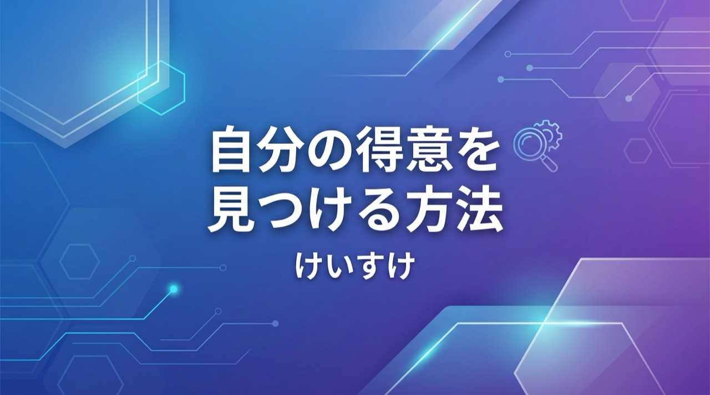
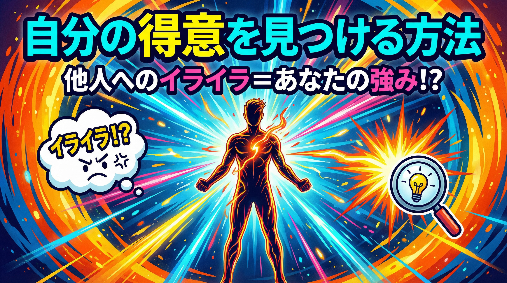
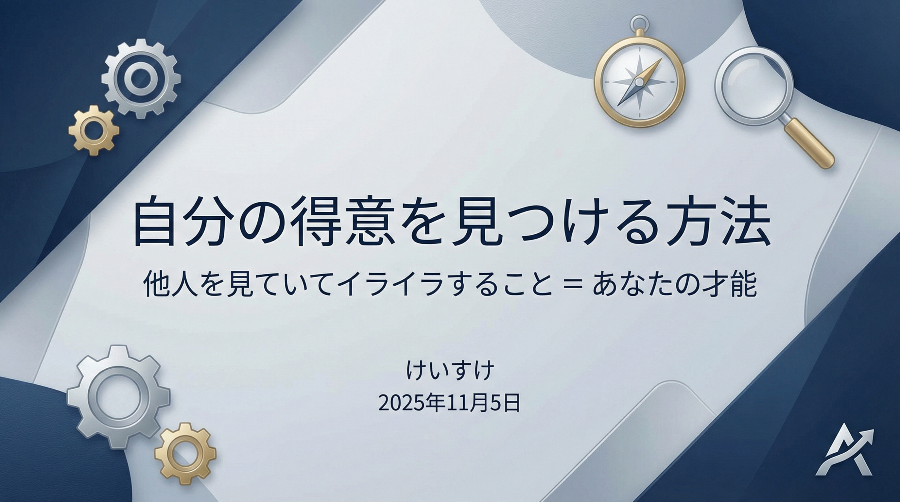
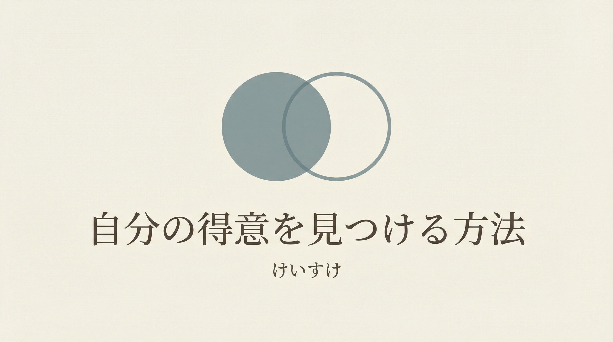
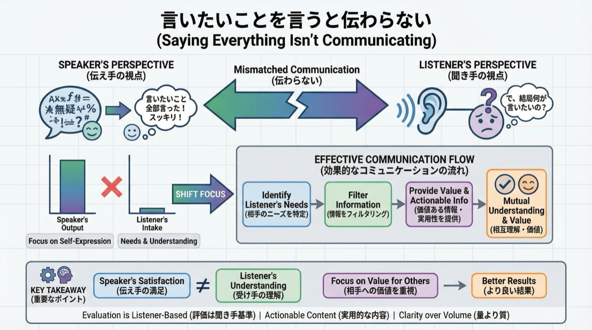
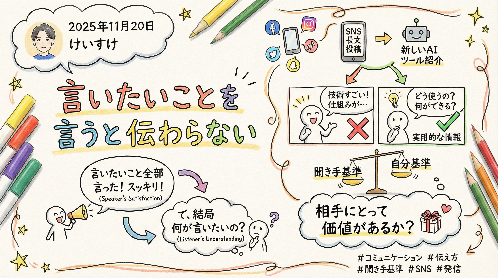

文章に集中するだけ。AIがあなたのコンテンツを引き立てるサムネイルを生成します。
Chrome拡張機能で、いつでもどこでもあなたと一緒に。
Nano Banana Proを採用。ページ内容を解析して、最適なサムネイルを自動で生成します。
モダン、ビビッド、プロフェッショナル、ミニマルなど、用途に応じて選択可能。
赤、青、緑、黄色、紫、オレンジ、ピンク、ティール、ネイビー、グレー、ブラックから選択できます。
YouTube、Instagram、ストーリーなど、あらゆるプラットフォームに対応したサイズを提供。
独自のデザインスタイルを作成し、グループとして管理できます。
デザイングループをJSON形式で保存し、別の環境でも利用可能。
サムネイルにしたいページの内容やキーワードを入力してください。タイトルも任意で設定できます。
デザインスタイル、カラー、アスペクト比を選択します。
生成ボタンを押すと、AIが最適なサムネイルを作成します。何度でも再生成可能です。
実際に生成されたサムネイルの例をご覧ください






最新版をダウンロードして、すぐにご利用いただけます。
ダウンロードすることで、利用規約およびプライバシーポリシーに同意したものとみなされます。
利用規約に同意してダウンロード (v1.0.0)Thumbnail Creator自体は無料でご利用いただけます。ただし、画像生成にはFAL AI APIを使用するため、FAL AIの利用料金が別途発生します。詳細はFAL AIの公式サイトでご確認ください。
Google ChromeおよびChromiumベースのブラウザ（Microsoft Edge、Braveなど）でご利用いただけます。
FAL AIのダッシュボードでアカウントを作成し、APIキーを取得してください。取得したAPIキーは拡張機能の設定画面で入力します。詳しい手順は使い方ページをご覧ください。
以下の点をご確認ください:
• FAL APIキーが正しく設定されているか
• FAL AIアカウントにクレジットが残っているか
• インターネット接続が有効か
上記を確認しても解決しない場合は、拡張機能を再インストールしてください。
生成された画像の権利は、FAL AIの利用規約に従います。基本的にAI生成画像は商用利用も可能ですが、詳細はFAL AIの利用規約をご確認ください。
可能です。拡張機能内の「新規グループを追加」ボタンから、独自のデザインスタイルを作成できます。プロンプトやサンプル画像も設定可能です。作成したデザインはエクスポートして他の環境でも利用できます。
APIキーやデザイングループの設定は、すべてブラウザのローカルストレージに保存されます。外部サーバーへの送信は行いません。ただし、APIキーは平文で保存されるため、共有PCでのご利用は推奨しません。詳細はプライバシーポリシーをご確認ください。